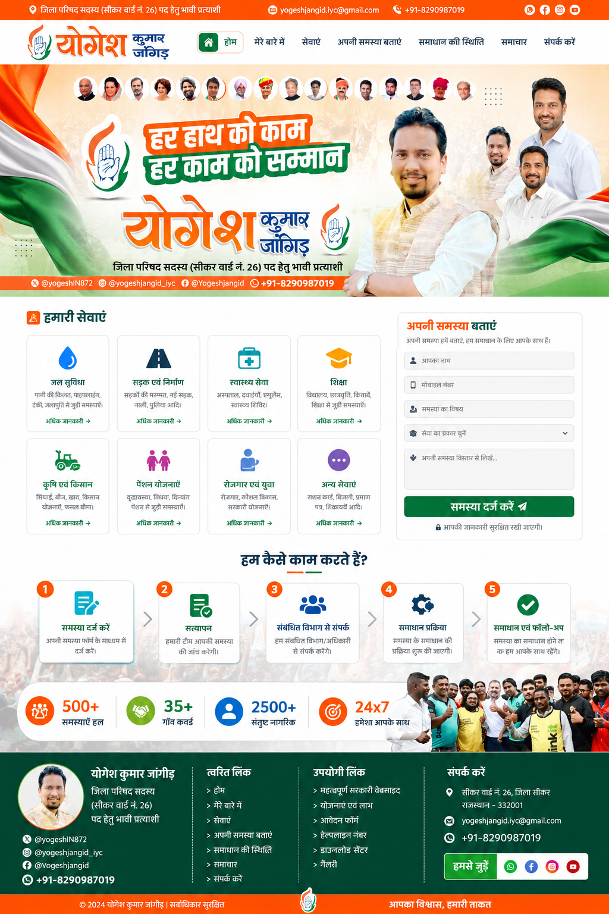
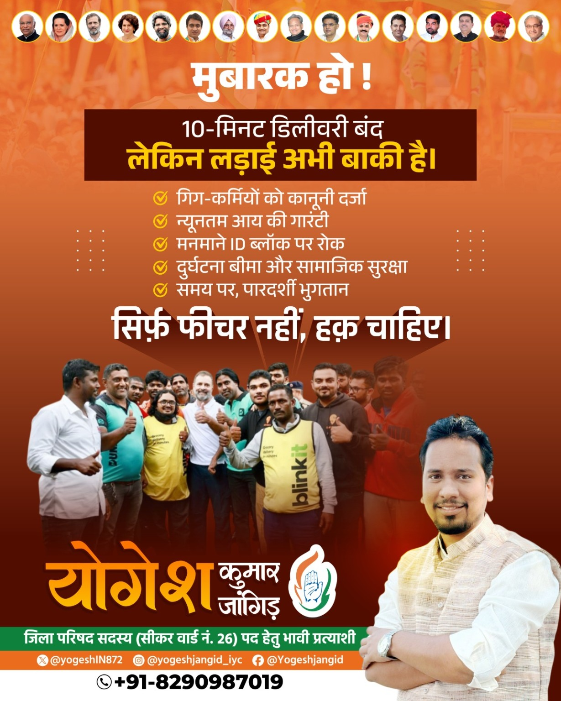
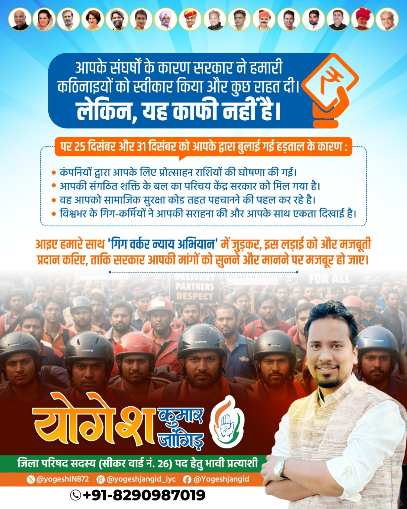
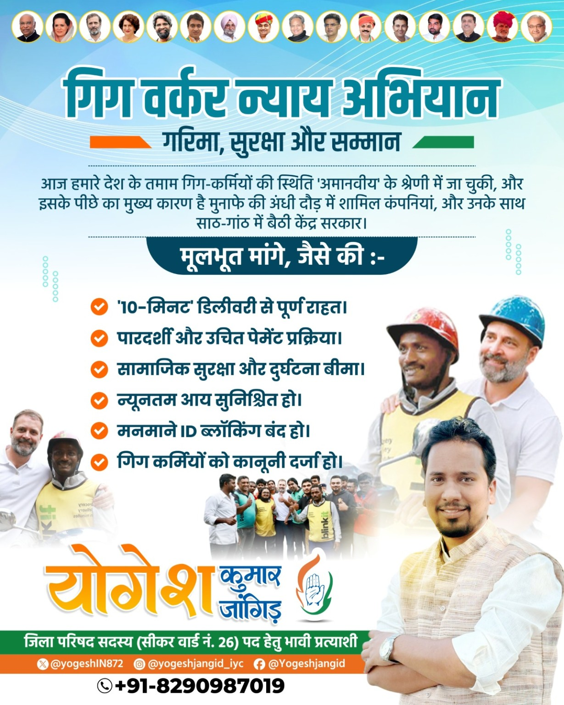
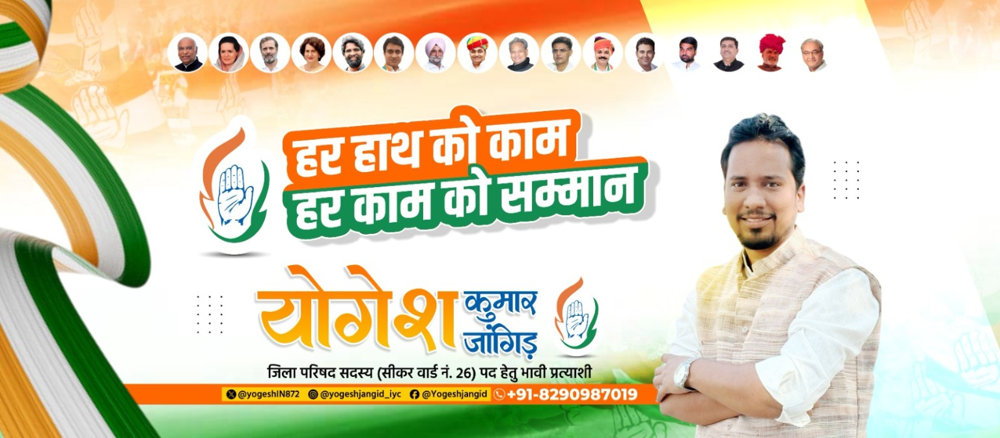

💧
जल एवं स्वच्छता
पेयजल, नाली, सफाई, कचरा और जलनिकासी।
पानी, सड़क, स्वच्छता, स्वास्थ्य, शिक्षा, पेंशन और अन्य स्थानीय सेवाओं से जुड़ी समस्या साझा करें। आपको उपलब्ध प्रक्रिया और संबंधित सेवा के बारे में प्रारंभिक मार्गदर्शन मिलेगा।

सही श्रेणी चुनकर समस्या को व्यवस्थित रूप से दर्ज करें।
पेयजल, नाली, सफाई, कचरा और जलनिकासी।
सड़क, गड्ढे, सार्वजनिक मार्ग और स्ट्रीट लाइट।
स्थानीय स्वास्थ्य केंद्र और स्वास्थ्य सेवाएँ।
विद्यालय, छात्र सुविधाएँ और शिक्षा संबंधी समस्याएँ।
सिंचाई, कृषि, ग्रामीण सुविधाएँ और विकास कार्य।
पेंशन, प्रमाण-पत्र, आवेदन और योजना संबंधी जानकारी।
रोजगार, प्रशिक्षण और कौशल विकास से जुड़ी जानकारी।
राशन, बिजली, प्रमाण-पत्र या अन्य स्थानीय विषय।
स्थान और समस्या का स्पष्ट विवरण दें। किसी भी संवेदनशील पहचान दस्तावेज की फोटो यहाँ अपलोड न करें। आप चाहें तो सीधे Google Form भी भर सकते हैं।
Google Form से समस्या दर्ज करें ↗अपनी शिकायत ID दर्ज करें।
आपके दिए गए 2026 वार्ड दस्तावेजों के आधार पर शिकायत फॉर्म में ये क्षेत्र विकल्प जोड़े गए हैं।
वार्ड 1, 3 और 4 के उपलब्ध दस्तावेज।
वार्ड 1, 3, 4, 5, 6, 7, 8 और 9 के उपलब्ध दस्तावेज।
वार्ड 1, 2 और 3 के उपलब्ध दस्तावेज।
यह AI सहायता केवल प्रारंभिक जानकारी देती है। पात्रता, सरकारी निर्णय या शिकायत का अंतिम निपटारा संबंधित विभाग के नियमों के अनुसार होगा।
अपलोड किए गए डिजाइन यहाँ संदर्भ/अभिलेख के रूप में दिखाए जा सकते हैं।




स्थानीय समस्या के बारे में स्पष्ट जानकारी साझा करें।